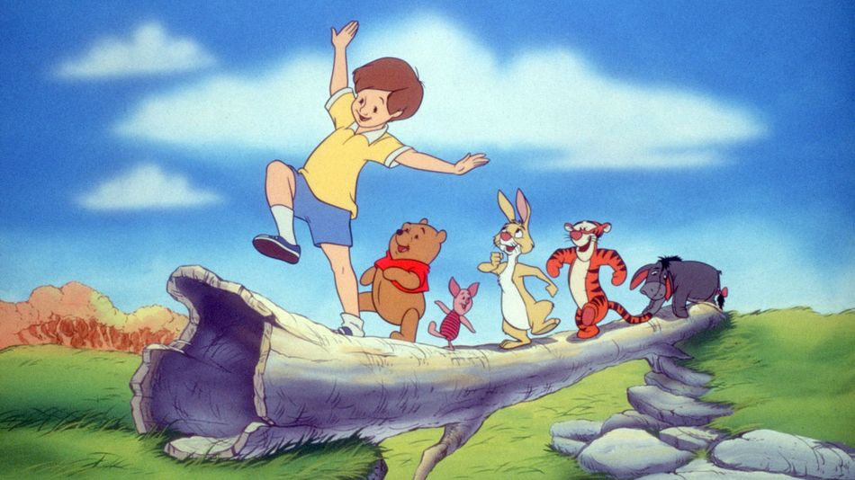

Ursinho Pooh

Habilidades especiais do Ursinho
Amizade
Lealdade
Paciência
Alegria
Frase que o Ursinho sempre fala
Às vezes, as menores coisas ocupam mais espaço em seu coração.
Relacionamentos do Ursinho
Leitão
Tigrão
Bisonho
Abel
Curiosidades sobre o Ursinho
- Nos primeiros desenhos, Pooh não usava roupas.
- O nome "Pooh" veio de um cisne.
- O Bosque dos Cem Acres existe de verdade
